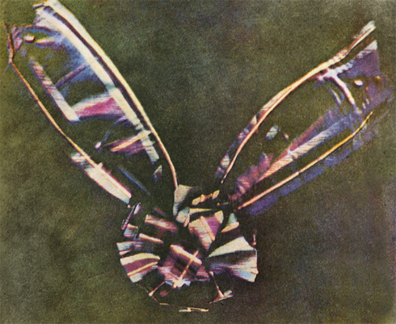
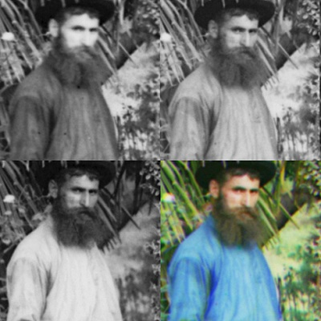
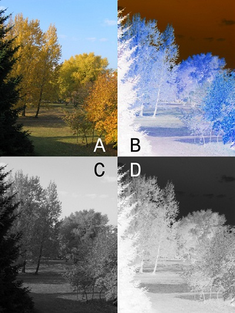
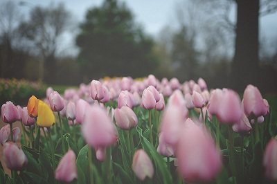
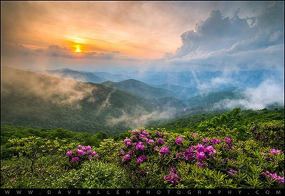
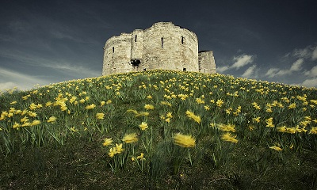

Color Photography
Color (or colour) photography is photography that uses media capable of reproducing colors. By contrast, black-and-white (monochrome) photography records only a single channel of luminance (brightness) and uses media capable only of showing shades of gray.In color photography, electronic sensors or light-sensitive chemicals record color information at the time of exposure. This is usually done by analyzing the
spectrum of colors into three channels of information, one dominated by red, another by green and the third by blue, in imitation of the way the normal human eye senses color. The recorded information is then used to
reproduce the original colors by mixing various proportions of red, green and blue light (RGB color, used by video displays, digital projectors and some historical photographic processes), or by using dyes or pigments to
remove various proportions of the red, green and blue which are present in white light (CMY color, used for prints on paper and transparencies on film). Monochrome images which have been "colorized" by tinting selected
areas by hand or mechanically or with the aid of a computer are "colored photographs," not "color photographs." Their colors are not dependent on the actual colors of the objects photographed and may be very inaccurate or
completely arbitrary. Color photography has been the dominant form of photography since the 1970s, with monochrome photography mostly relegated to niche markets such as art photography.

All forms of photography have evolved from monochrome photography. Color film is black and white film with three layers of emulsion. Each layer has a colored coupler that makes the resulting black metallic silver deposits in the negative respond to colors in the visible spectrum; red, green and blue. Digital photography employs a silicon sensor that records focused light falling onto it in much the same way that light rays reaching the film expose that portion of the film. So all photography has evolved from the original techniques created to record light rays onto silver halides.
Processes of Color Photography

One of the early methods of taking color photos was to use three cameras. Each camera would have a color filter in front of the lens. This technique provides the photographer with the three basic channels required to recreate a color image in a darkroom or processing plant. Russian photographer Sergei Mikhailovich Prokudin-Gorskii developed another technique, with three color plates taken in quick succession.
Color Negative Film

Color negative film forms a negative (color-reversed) image when exposed, which is permanently fixed during developing. This is then exposed onto photographic paper to form a positive image.
Finding a beautiful bright color to photograph is perhaps the easiest part of capturing bold colors tastefully. To create striking photos with bold colors, you need to be aware of all the colors in the image. While the brightest colors grab your attention, the surrounding (neutral) colors are actually where the beauty lies. They help support the bold colors, like a frame for a painting.
Lighting is always an important factor in photography; you just need to know what kind of lighting to use. When you’re using bold colors to add drama to a photo, you need lighting that doesn’t compete for the viewer’s attention. It shouldn’t be too powerful. Colors are actually easier to record when the lighting is indirect or even subdued.
Consider flower photography. Experienced photographers head to flower gardens when the day is overcast and gloomy. Intense light can cause colors to reflect or bleed into one another, so flowers are brighter without strong sunlight. The muted light allows their color to really “pop.”

You can’t always head out to shoot photos when the lighting is ideal. Terrible lighting shouldn’t stop you from taking great photos, though. You just need to get the right gear so you can always go home with a good shot. For bold colors, you’ll need a polarizing filter (and know how to use it). A polarizing lens is often used to reduce glare, but you can also use it to intensify color.
Take plenty of time to experiment with the filter. You can’t just screw it into your lens and expect awesome photos. You’ll have to angle it properly to the subject in order to control the vibrancy of the light.

If a lens isn’t an option, you can achieve a similar effect by taking your settings down a single stop. In other words, adjust the aperture down (which actually increases the number of the setting by one measure). This reduces light into the lens. By limiting the light, you’ll end up with photos that resemble those taken with a filter.
Similarly, you could dial down the ISO. Taking down the ISO will make your camera sensor less sensitive to light, which will give you the same results.

Regardless of the technique you use, remember that capturing and intensifying color will change the mood of your photo. For example, autumn leaves can have warm or somber appearance depending on how intense the colors are. Brilliant yellows and reds can create a sense of warmth, while fading those colors to brown gives the image a more melancholy feel.
These moods shouldn’t depend on color alone. To make your photo as powerful as possible, keep the mood consistent. The composition and concept should work together with bold colors to create a compelling, beautiful image.